The politics, ethics and social context of digital culture¶
I thought it might be useful to give a non-digital example first. We will see whether it really helps or not!
Trams: a case study in technology¶
In 1700, what we now call South Birmingham was a patchwork of small subsistence tenant farms, but as people left the land to work in factories and other industrial jobs, these farms gradually became larger.
Here is a map of Birmingham in 1831, as you can see South Birmingham does not really exist yet. The built up areas are what is now known as the city centre:
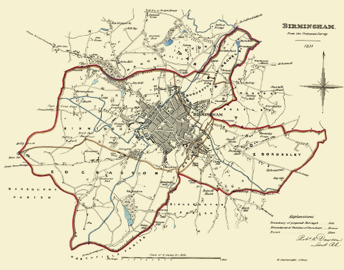{kind=link}
One of these larger farms was called the Grange Estate, in the following image, Isaac Bate and his family pose outside the farmhouse in 1876:
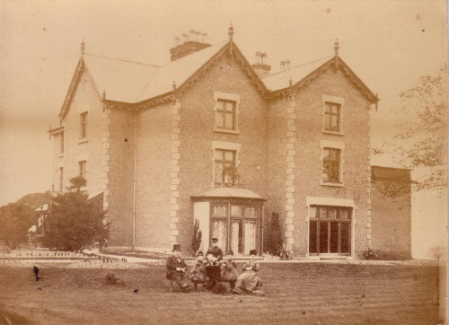{kind=link}
At the turn of the 20th Century, there was a massive housing boom and the Grange Estate was bought in 1895 and zoned for housing and roads.
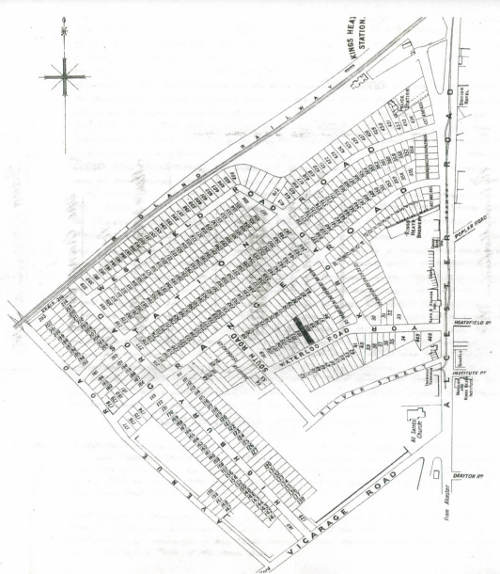{kind=link}
It is like Sim-City, everything needed for the good life is provided, including shops and the important combination of a church and a brewery.
Victorian industrial workers would walk or cycle along quiet tree-lined avenues and then take the tram and train for longer distance travelling.
So far so good. You will notice there is no car parks, no off street parking, no garages. The total number of cars in the world was at this point was approximately 25, most of which were Benz hand made cars in Germany.
However, after the war, the brave new world required that the trees, train station and tramlines were all removed to make more space for the motorcar.

The Grange Estate is now overflowing with cars, and the Alcester Road is a traffic jam for much of the day. Traffic accidents are the leading cause of death for children and Birmingham is one of the most obese cities in Europe.
Car ownership in Birmingham peaked at 50% of households, one of the highest rates of car ownership for a large city. There is not, and never will be, enough space for everyone to own a car in dense urban areas like Birmingham.
Cars socially exclude people who do not own them, and are dangerous to people walking and cycling, and prevent community building as you cannot talk to other residents while stuck in a small metal box.
There are currently 380,000 cars in Birmingham (8000 are added every year). As the population of Birmingham is predicted to continue growing, the car is becoming increasingly unsustainable. The council have produced a plan:
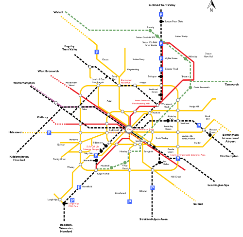{kind=link}
You guessed it, the plan is to reopen the train stations and put the trams back. Getting us precisely back to where we were in 1896.
The new Birmingham trams have a maximum capacity of 210. Cars in Birmingham have an average occupancy rate of 1.2.
A car driven for an hour every day, spends 4% of its time in use, 96% of its time rusting and getting in the way.
Cars are overproduced and inefficiency used. However, this overproduction has provided large numbers of good jobs - 145,000 in the UK alone currently work in the automotive industry.
If everyone moves to trains, trams and bikes, where do the jobs come from?
If Birmingham gets its comprehensive tram network, it needs just 120 tram sets to provide transport for the whole city (service every 6 minutes each way).
What does Birmingham’s 60 year love affair with the car tell us about technology?
- Increased technological efficiency destroys jobs (while creating others).
- Sometimes you have to go “back to the future”
- Not all new technologies are necessarily a good idea
- Technology is never un-invented, everything survives somewhere but the rate of growth or decline is the important thing to notice.
The history of the computer is much like the history of the tram.
The real history of computing (short version)¶
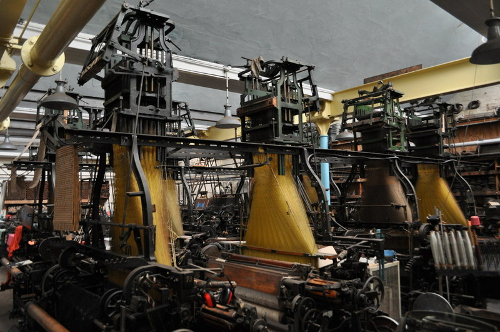{kind=link}
The first programmable object is the Jacquard Loom in 1801, it used punch cards which allowed different weaving patterns.
{kind=link}
The digital age almost begins in 1843, when Lady Ada Lovelace (the daughter of poet Lord Byron) wrote the first computer programme, algorithm for Charles Babbage Analytical Engine to compute Bernoulli numbers.
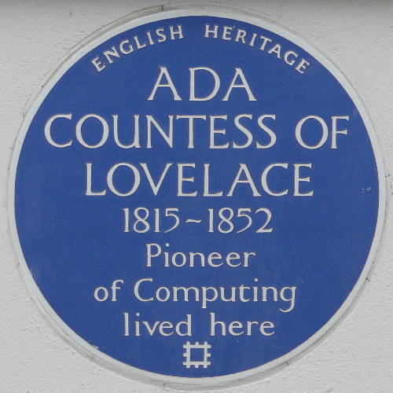{kind=link}
The programme was written as part of a set of examples of what could be run on Charles Babbage’s computer the Analytical Engine. Sadly, the British government decided to cancel his research funding so this machine was never finished, but it would have been the first general purpose digital computer.
Here is his earlier machine called the difference engine:
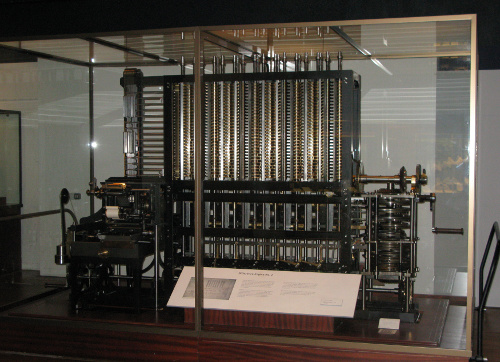{kind=link}
The digital age tries to begin again in 1936 when Alan Turing explains in a seminar paper that any real-world general-purpose computer or computer language can approximately simulate any other real-world general-purpose computer or computer language, i.e. it is “Turing complete”.

Turing went on to create this, the Bombe, a machine designed to decipher encrypted German messages during World War II.
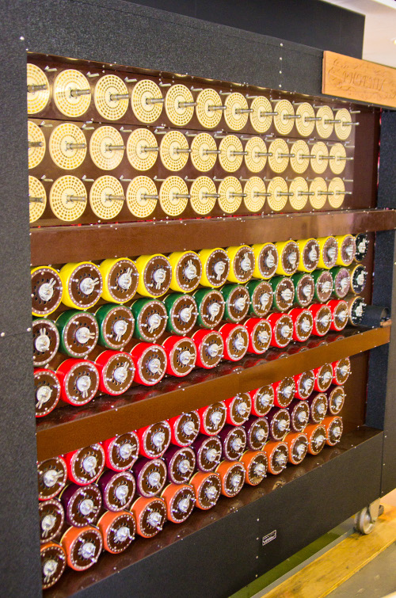{kind=link}
The successor was called Colossus, and is starting to be a recognisable computer.
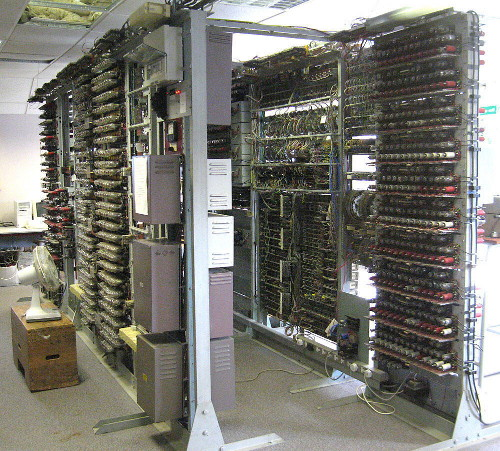{kind=link}
Alan Turing was not appreciated during his lifetime, to put it lightly. However, now he is a man of many memorials, including these:
 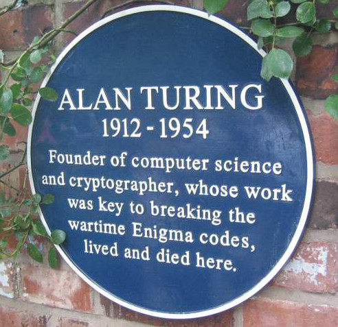
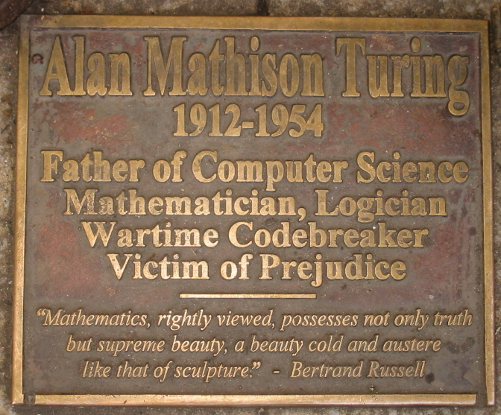
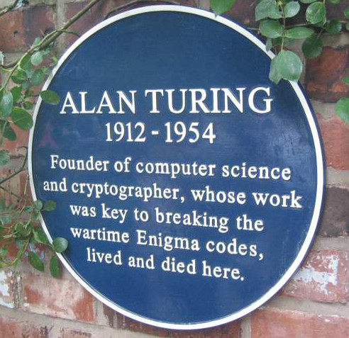
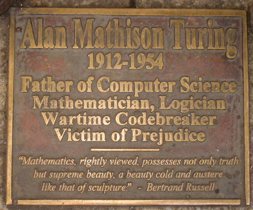
{kind=link}
{kind=link}
After that we have the first non-military computer, the Manchester Mark I in 1949, and pretty much from here the digital age has begun.
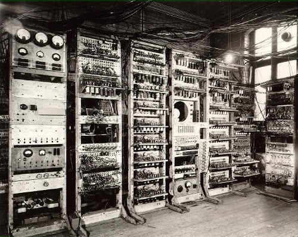{kind=link}
The next image shows the Atlas, also at the University of Manchester, the world’s most powerful computer in 1962. It had more computer capacity than the rest of the United Kingdom put together.
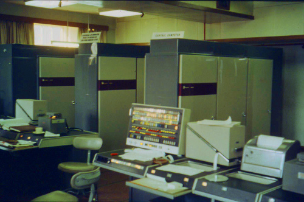{kind=link}
This is the 1970 PDP-11 operated here by Ken Thompson and Dennis Ritchie.
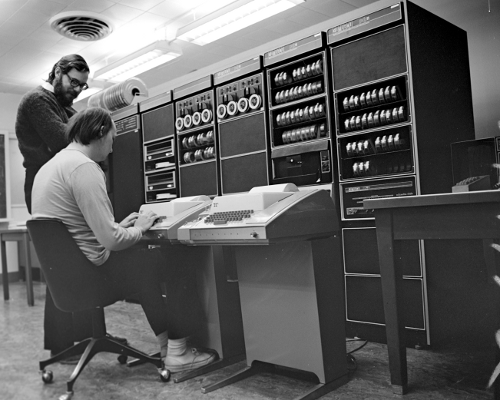{kind=link}
Thompson is sitting at a teletype terminal. Where you code into the keyboard and the computer responds by printing out the result.
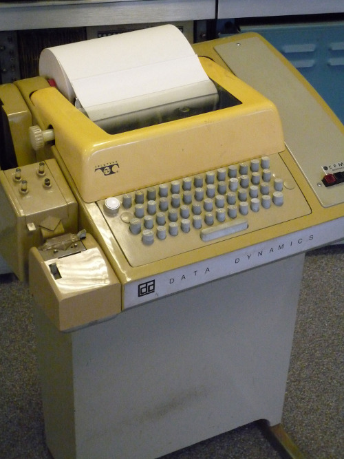{kind=link}
Shortly afterwards, video terminals were invented. Such as this one:
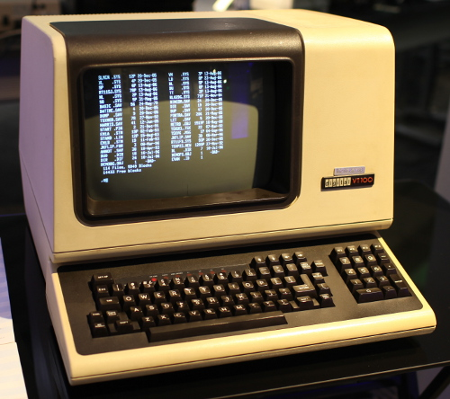{kind=link}
It may look like a computer, but it is actually just a screen and a keyboard, all the processing happens in the mainframe computer elsewhere.
These type of computers can and normally did had multiple terminals, sometimes in other rooms or other buildings.
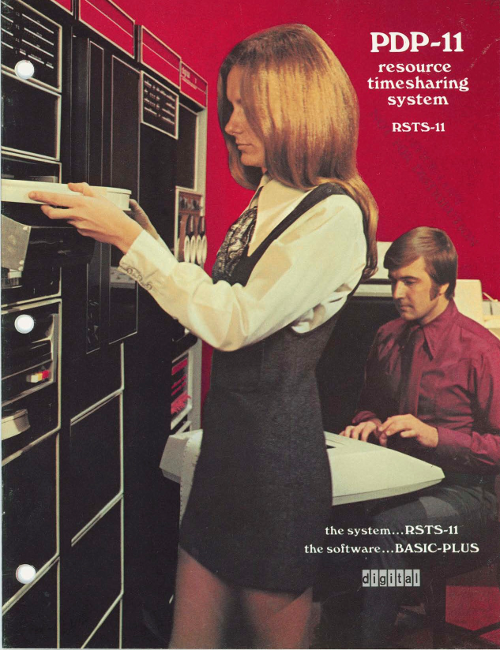{kind=link}
In the 1970s, it was called time-sharing. Hundreds or thousands of terminals could share the same mainframe - which would be maintained and updated by specialists.
I love this next photo, the guy in the front looks like he has the universal programmer’s tense expression, i.e. ‘Why the heck is this not working now?’.

These mainframes ran an operating system called Unix started by Thompson and Ritchie. The different terminal users could communicate with each other and collaborate.
The terminals got smarter over time, and even had graphical front ends that looked something like this:
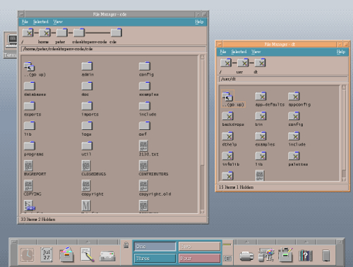{kind=link}
This was the start of the modern era of computing. Many programs that were written in the 1970s are maintained today. There is a continuous thread that runs from Lovelace and Babbage, through Turing to the real beginning of the digital age in the 1970s.
So far so good. This is our tram. Next, comes the car, or indeed two of them.
1. Personal computers¶
Here is an early attempt from 1969 to market a home computer.
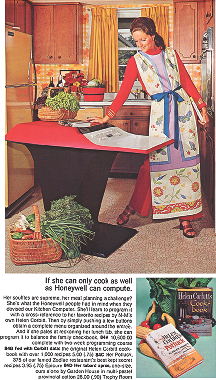This particular model was a commercial failure.
When the PC came out, such this example from 1981, compared to the Unix systems of the 1970s and 1980s, they were giant step backwards.
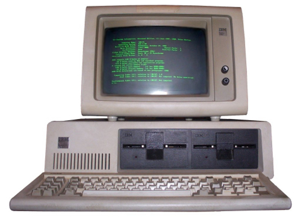{kind=link}
No networking, a single process at once, focused on really dull office tasks like typing a letter. The biggest problem looking back was the software.
2. The rise of proprietary software¶
Until this point, the source code of all programs had been shared among the largely academic computing world. Everyone could study and improve computer programs and share those improvements back to the community.
With the new idea of proprietary software or closed source software, you don’t legally own the software anymore, you have merely licensed the right to use it under certain conditions.
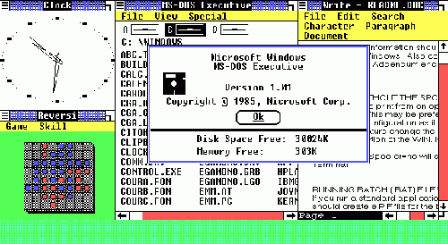{kind=link}
The source of the software is not shared, you just have compiled (unreadable) copy of it. There can now be a difference on what you think the software does (something useful) and what it actually does e.g. spy on you.
When you understand this point, you suddenly a realise it is a bad idea to licence or use any software that cannot be publicly peer reviewed and fixed.
Proprietary software comes with multiple pages of legalese and asks you to tick that you not only read it but also understand it. You have to lie in order to start it, and goes downhill from there.
The Snowden revelations printed in the Guardian have confirmed what we already knew, that Microsoft software has built-in backdoors for the NSA to spy on its users. Even scarier is that secret backdoors created for Microsoft and the NSA could also be exploited by criminals.
Proprietary software, especially in the form of Microsoft Windows, is a temporary aberration in the history of the digital. In 50 years time, Microsoft Windows will be considered as important as this device:
So lets get back to the trams. There were two massive and related developments which happened almost in the background, but would come to dominate the digital world.
The rise of free/open source software¶
In 1983, a famous programmer in MIT called Richard Stallman began the ‘Free Software’ movement. As well as being a well known software developer (he invented the concept of a live real time text editor and started the most widely used compiler today - GCC), he best known as a digital philosopher.

Stallman argued that software developers had a moral, ethical and political duty to enable co-operation and prevent restrictions on the ability of users to study, examine, peer review, modify and share software. He argued that proprietary software was anti-social, corrupt and ultimately self-defeating.
It is important to understand the difference between the terms ‘commercial’ and ‘proprietary’. Software can be ‘commercial’ - i.e. made by a company for profit, with or without being proprietary. Likewise a proprietary program may be made available at cost or at no cost.
He illustrates the concept by comparing ‘a free beer’ with ‘free speech’.
Eric Raymond and Bruce Perens created a later related concept called ‘open source’, which emphases the practical aspects rather than the political and ethical ones. For example, the vast majority of software is not created for sale in packaged boxes but is created use within companies and institutions where software is not their primary purpose. So if this software is shared and improved in a community, it gives added value to those who engage in it.
Almost every major software development of the 1990s and 21st century has happened within the Free Software/Open Source world including Linux and Android.
Most importantly, the most famous piece of free/open source software of them all, the World Wide Web.
The World Wide Web¶
In the early 1990s, the best designed and most powerful information protocol was called Gopher. However, despite its technical strengths, Gopher eventually lost out because the copyright owner, the University of Minnesota, wanted to sell it as proprietary software.
And finally a Brit again!
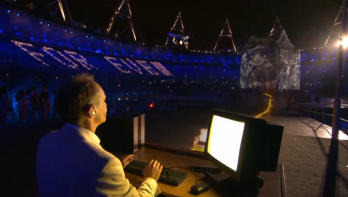{kind=link}
Tim Berners-Lee created World Wide Web, which while technically inferior to Gopher, was free software. Anyone could develop a server or a client without having to ask or pay anyone for permission. When WWW became widely shared in 1993, proprietary Gopher was toast. Gopher was eventually re-licensed as free software in 2000, but it was too late, WWW had taken over everything.
Finally, desktop computers had similar networking capabilities to 1970s mainframes. While they are a lot of people still using Windows, these are merely like the 1970s dumb terminals, 83% of web servers are running free software. Now with Apple OS X (based on FreeBSD Unix-like system), Linux desktops like Ubuntu and the rise of Android based phones and tablet (Android is based on the free software operating system Linux), almost everyone is running a system which is based on the 1970s Unix. The 20 years of the Windows aberration is coming to a close.
Go Linux, go WWW, go Trams, go bikes!
Academia and Open Source Software¶
Most UK and EU funding bodies now require that any software produced in a research project is released as open source software. Software developers within the academy, especially those in the humanities, are unlikely to be allowed to large pay licensing fees and are expected to use open source tools wherever possible.
Any project that uses the digital is likely to involve some open source software.
Beyond Open Source¶
The WWW has enabled collaboration in many areas, not just software. Principles and ideas from open source have been applied to other fields.
- Freedom of Information - providing open access to government documents through the Web
- Open Access - unrestricted access via the Web to peer-reviewed journal articles and primary data.
- Crowd sourcing - creating content by soliciting contributions from online communities - Wikipedia being a prominent example
- Crowd funding - funding projects through soliciting contributions from web users - e.g. Kickstarter
Digital Conduct¶
Collaborative and creative online communities are self-selecting. People form communities to create something, should they also be responsible for social justice?
Should these collaborative communities enabled by the web and by free/open principles have standards of behaviour, if so what should they be and who polices them?
Increasingly these creative communities have published codes of conduct, especially regarding communication and discrimination.
Developing-world criticisms: does attempting to regulate conduct in digital creative communities risk the danger of western (especially US west-coast) cultural imperialism? How do diversity and social policies relate to freedom of speech?
Does forcing participants to use real names instead of pseudonyms cause problems for those with fear of harassment?
How should gender be dealt with in largely male dominated online communities? Are those who run these communities responsible for addressing gender imbalances?
Communities that work primarily online but have conferences or social meetings pose particular issues in terms of harassment/unwanted attention. E.g. conferences with male to female ratios of 10 to 1 are not uncommon.
Some further reading¶
Karen Sandler, 2012 Keynote, (first 25 mins about hacking the software on her defibrillator), http://www.youtube.com/watch?v=5XDTQLa3NjE
Happy Hacking, The Keiser Report, Russia Today, 2012 (start at 12m) http://youtu.be/3o82P4V1vu0?t=12m9s
The Zen of Python, Tim Peters, 2004 http://www.python.org/dev/peps/pep-0020/
Free Software, Free Society: Selected Essays of Richard M. Stallman, 2002 http://www.gnu.org/philosophy/fsfs/rms-essays.pdf
The Cathedral and the Bazaar, Eric Raymond 2002 http://www.unterstein.net/su/docs/CathBaz.pdf
Revolution OS (2001), http://www.youtube.com/watch?v=CjaC8Pq9-V0
Biculturalism, Joel Spolsky, 2003 http://www.joelonsoftware.com/articles/Biculturalism.html
The Code Of Conduct, Jesse Noller, 2012 http://jessenoller.com/blog/2012/12/7/the-code-of-conduct
Geek Feminism: Timeline_of_incidents http://geekfeminism.wikia.com/wiki/Timeline_of_incidents
Donna Haraway, “A Cyborg Manifesto: Science, Technology, and Socialist-Feminism in the Late Twentieth Century,” in Simians, Cyborgs and Women: The Reinvention of Nature (New York; Routledge, 1991), pp.149-181. http://www.egs.edu/faculty/donna-haraway/articles/donna-haraway-a-cyborg-manifesto/